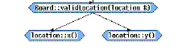
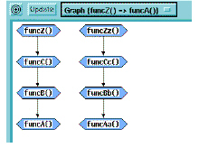

Graph Output
If DIScover finds a path for your function query, its default action is to build a graphical view similar to a Tree diagram.
Each function, including arguments, appears as a node within a blue hexagon. Lines between each hexagon indicate the path.

When you move the mouse pointer over a node or relation line, the function’s definition appears in the output buffer at the bottom of the Viewer.
Note: If your function query includes two complete yet separate paths (two groups of source and target functions that have no relations between the sets), DIScover shows both sets in the same Graph view.

If you click Save to File and specified functions with a path in the Graph dialog box, DIScover creates an ASCII text file, such as the following example:
{Board::clearSquare(location &)}
|E| = 2
0. Board::validLocation(location &)
1. location::y()
|E| = 2
0. Board::validLocation(location &)
1. location::x()
[2]
|
Element |
Description |
|
1 |
Source function |
|
2 |
Cardinality of edges |
|
3 |
Function in path |
|
4 |
Target function |
|
5 |
Total number of paths |
A Graph report starts with the source function. Under it falls the cardinality of edges, showing you how many functions there are to a path, where each edge is a function. The total number of edges is equal to the number of functions in the path after the target function.
The final function in the path is the target. The total number of paths reported reflects how many times the path branches between a source and its targets.